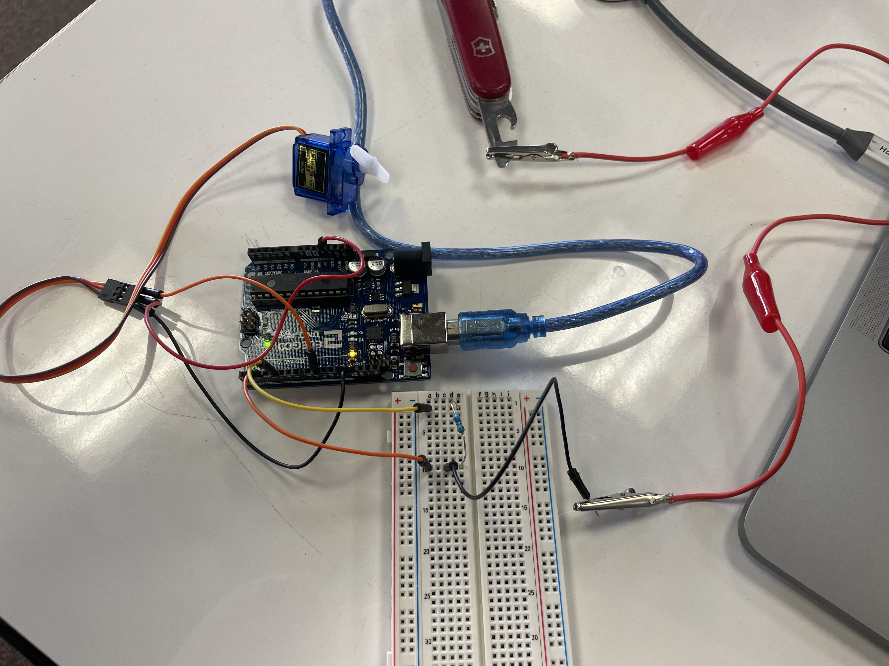

Here is all the documentation for assignment 4!
Here is all the documentation for assignment 4!
#include // includes library for capacitive sensor to use as the input
#include // includes library for servo to use as the output
int servoMap, sensorValue, sensorMax, sensorMin; // initializes preliminary variables for mapping
Servo myServo; // creates servo object
CapacitiveSensor cs_4_2 = CapacitiveSensor(4, 2); // creates cap sensor object between pins 4 and 2
void setup() { // this runs once when ardiuno is turned on
cs_4_2.set_CS_AutocaL_Millis(0xFFFFFFFF); // autocalibrates cap sensor
Serial.begin(9600); // begins serial monitor
myServo.attach(9); // declares servo is attached to pin 9
while (millis() < 5000) { // enters 5 second loop to record max and min sensor values for mapping
sensorValue = cs_4_2.capacitiveSensor(30); // takes cap sensor measurement
if (sensorValue > sensorMax) { // checks if measurement is greater than existing max
sensorMax = sensorValue; // replaces it if so
}
if (sensorValue < sensorMin) { // checks if measurement is less than existing min
sensorMin = sensorValue; // replaces it if so
}
}
}
void loop() { // runs until arduino is turned off
long start = millis(); // records time in milliseconds
long total1 = cs_4_2.capacitiveSensor(30); // records cap sensor measurement 30 times to avoid faulty data
if (total1 > 200); // checks if cap sensor is touched
servoMap = map(total1, sensorMin, sensorMax, 0, 180); // maps measurement from input to output for the arduinio
myServo.write(servoMap); // moves servo with respect to mappedmeasurement
delay(150); // 150 millisecond delay
Serial.print(millis() - start); // prints performance measurement in milliseconds
Serial.print("\t"); // prints a tab for spacing
Serial.println(total1); // prints measurement from cap sensor
delay(100); // 100 millisecond delay
}
}
}

This is a top view of the physical circuit.

This is a top view of its schematic.
Q1: Say you are using a servo motor you attach to pin 9. In your loop() you have the following code: for (int i=0, i<180, i++){servo.write(i); delay(100);} Draw a graph with the X axis in seconds, for two seconds, and the y-axis the voltage at pin 9 with respect to ground.

Q2: Your input device is slightly broken, leading it to give us an erroneous reading 1% of the time. How can we address this? Answer in (pseudo)code.
Q3: Your input device is slightly noisy, leading the measurement to randomly deviate from the true measurement up or down by 10%. How can we address this? Answer in (pseudo)code.